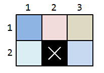
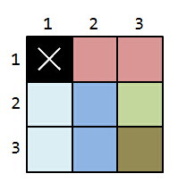
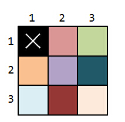

HDU5301. Buildings
内存限制：4000/2000 MS (Java/Others) 时间限制：131072/131072 K (Java/Others)
题目描述
Your current task is to make a ground plan for a residential building located in HZXJHS. So you must determine a way to split the floor building with walls to make apartments in the shape of a rectangle. Each built wall must be paralled to the building's sides.
The floor is represented in the ground plan as a large rectangle with dimensions $n \times m$, where each apartment is a smaller rectangle with dimensions $a\times b$ located inside. For each apartment, its dimensions can be different from each other. The number $a$ and $b$ must be integers.
Additionally, the apartments must completely cover the floor without one $1 \times 1$ square located on $(x,y)$. The apartments must not intersect, but they can touch.
For this example, this is a sample of $n=2,m=3,x=2,y=2$.

To prevent darkness indoors, the apartments must have windows. Therefore, each apartment must share its at least one side with the edge of the rectangle representing the floor so it is possible to place a window.
Your boss XXY wants to minimize the maximum areas of all apartments, now it's your turn to tell him the answer.
The floor is represented in the ground plan as a large rectangle with dimensions $n \times m$, where each apartment is a smaller rectangle with dimensions $a\times b$ located inside. For each apartment, its dimensions can be different from each other. The number $a$ and $b$ must be integers.
Additionally, the apartments must completely cover the floor without one $1 \times 1$ square located on $(x,y)$. The apartments must not intersect, but they can touch.
For this example, this is a sample of $n=2,m=3,x=2,y=2$.
To prevent darkness indoors, the apartments must have windows. Therefore, each apartment must share its at least one side with the edge of the rectangle representing the floor so it is possible to place a window.
Your boss XXY wants to minimize the maximum areas of all apartments, now it's your turn to tell him the answer.
输入格式
There are at most $10000$ testcases.
For each testcase, only four space-separated integers, $n,m,x,y(1\leq n,m \leq 10^8,n\times m > 1, 1\leq x \leq n, 1 \leq y \leq m)$.
For each testcase, only four space-separated integers, $n,m,x,y(1\leq n,m \leq 10^8,n\times m > 1, 1\leq x \leq n, 1 \leq y \leq m)$.
输出格式
For each testcase, print only one interger, representing the answer.
样例
样例输入
2 3 2 2
3 3 1 1样例输出
1
2
Hint
Case 1 :

You can split the floor into five $1 \times 1$ apartments. The answer is 1.
Case 2:

You can split the floor into three $2 \times 1$ apartments and two $1\times 1$ apartments. The answer is 2.

If you want to split the floor into eight $1 \times 1$ apartments, it will be unacceptable because the apartment located on (2,2) can't have windows.